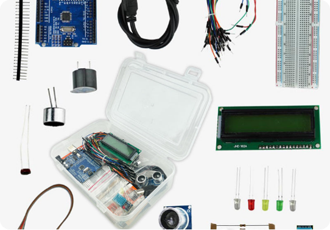
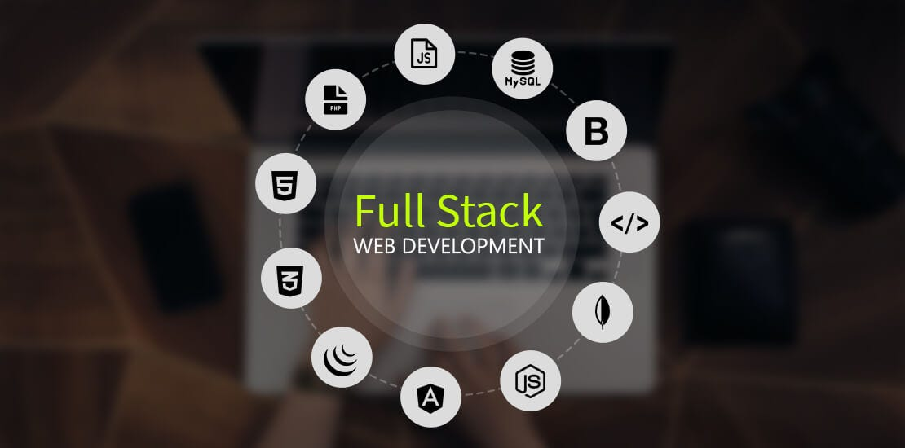
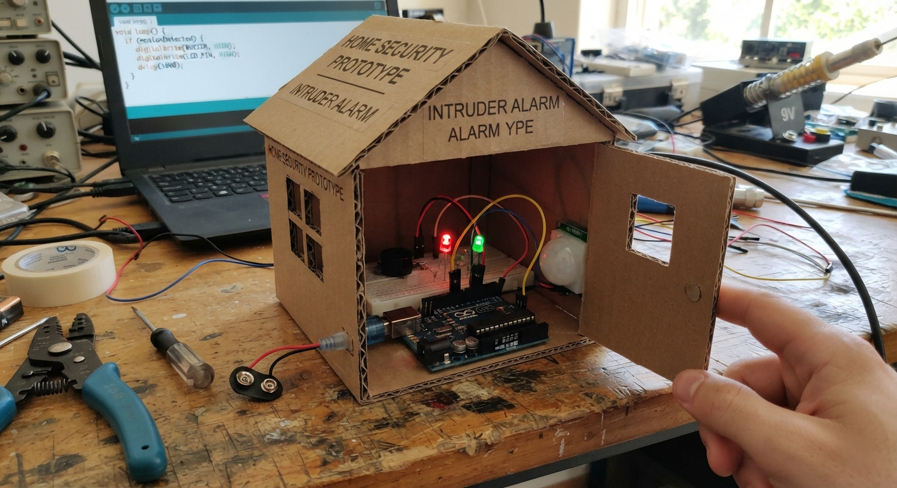
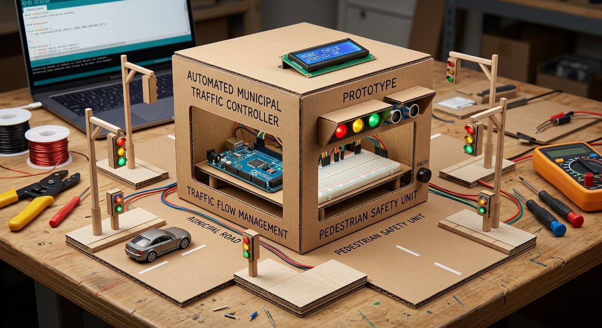
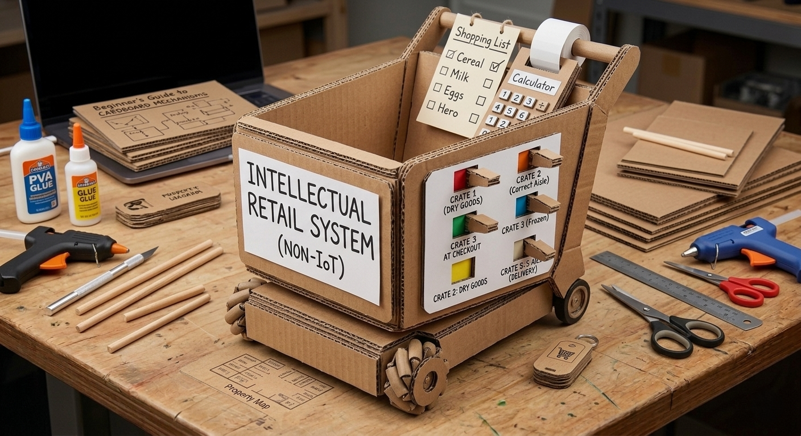

Upgrading Institutional ICT Labs into Incubation Hubs
We bridge the gap between abstract computer theory and real-world execution. Fulfilling the innovation curriculum through raw coding skills and automated hardware engineering.
"Intelligent software • Autonomous Systems • Absolute Security"
The J-Core Educational Advantage
Moving from rote memorization to active hardware and software creation.
Traditional ICT Labs
Memorizing definitions, learning static typing, and preparing for abstract exams. High capital investment with minimal real-world project outcomes.
The J-Core Model
Hands-on development from Day 1. Writing live software, programming physical automation logic, launching web portals onto the cloud, and mastering networking concepts.
Our Learning Pillars
Mastering practical technology through three interconnected domains.
Embedded Systems & Automation
Microcontroller programming, sensor integration, Wokwi logic simulations, and autonomous circuit engineering.

Full-Stack Web Foundations
Clean semantic HTML structure, responsive CSS layout architectures, interactive JavaScript logic, and cloud hosting.

Networking Concepts
Understanding network topologies, IP routing, hardware configurations, and infrastructure security for real organizations.
Lead Instructor Profile
Ayebale Joshua
Founder & Head Instructor
Software Engineer and Computer Science student at Gulu University specializing in embedded systems and Network Architecture. Proven academic history in delivering STEM subjects (Mathematics and Chemistry) at the secondary level.
"We believe in building raw skills. We don't teach students to memorize code; we train them to look at a complex problem, break it down logically, and write clean solutions from scratch."
Student Project Hub
Sample autonomous IoT projects engineered by students during J-Core practical sessions.

Smart Home Intruder Alarm
Ultrasonic sensor detection with buzzer alarm and cloud notification logic built using microcontrollers.

Automated Municipal Traffic Controller
Multi-lane timing logic, pedestrian priority triggers, and LED sequence control system.

Smart Shopping Trolley
Automated item checkout tracking with RFID sensors and display screen integration.